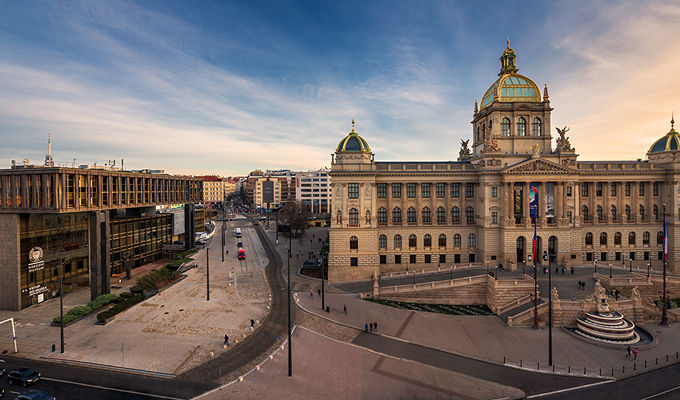

Národní muzeum bylo založeno v roce 1818. Historická budova Národního muzea, stojící na Václavském náměstí, byla poprvé otevřena v roce 1891. Na sté výročí vzniku Československé republiky v říjnu 2018 byla dokončena rekonstrukce historické budovy.
Mezi dnešními expozicemi jsou například dějiny našeho území od pravěku až po 21. století. Dále je zde expozice o evoluci, ve které se nachází známá kostra plejtváka myšoka, dlouhá přes 22 metrů. K Národnímu muzeu také patří další muzea, obsahující své vlastní expozice a dočasné výstavy.
| Pondělí | 10:00 - 18:00 |
| Úterý | 10:00 - 18:00 |
| Středa | 10:00 - 18:00 |
| Čtvrtek | 10:00 - 18:00 |
| Pátek | 10:00 - 18:00 |
| Sobota | 10:00 - 18:00 |
| Neděle | 10:00 - 18:00 |